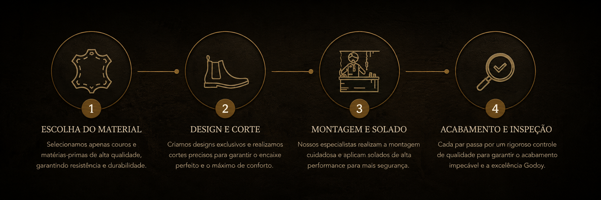

Tradição, técnica e cuidado em cada etapa.
Da escolha do material ao acabamento final, cada botina passa por um processo pensado para entregar resistência, conforto e qualidade com a identidade Godoy.

Linhas de produtos
Da escolha do material ao acabamento final, cada botina passa por um processo pensado para entregar resistência, conforto e qualidade com a identidade Godoy.
